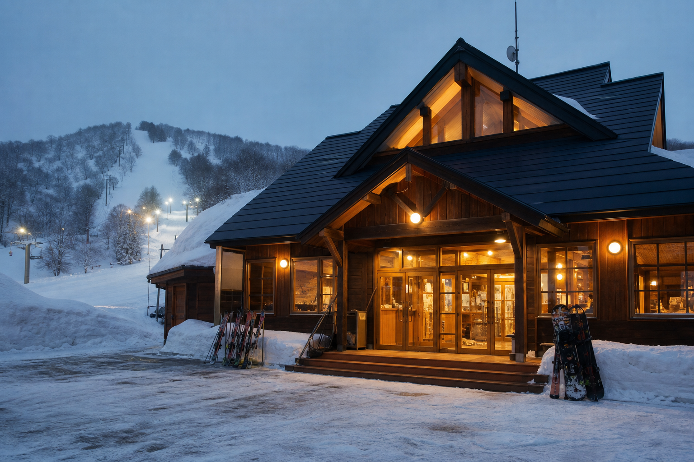
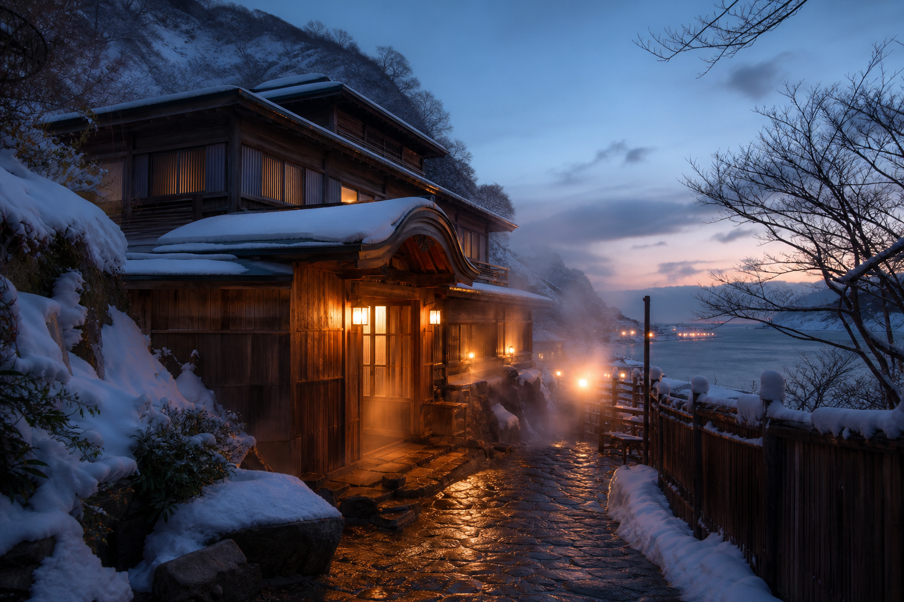

無料 × 21時まで × Tバー
リフト利用料無料のまま、21時までナイター営業——近年値上がり続けるリフト券とは対極の、町営ならではのコスパ。ゲレンデハンターにも「隠れた名所」として知られ始めています。
営業時間・アクセス北海道乙部町 · 道南日本海
無料で滑れる、稀有なTバー——21時までのナイター付き町営ゲレンデ。
利用料 無料 ナイター 〜21:00 Tバー1基更新 6/28 9:00
Tバーリフト
運行中
国内でも稀少（要現地確認）
ナイター
〜21:00
平日15:00〜 · 土日祝10:00〜
積雪
要確認
出発前に電話確認推奨
コース
A・B 2本
A200m · B160m
Free · Night Ski
リフト利用料は無料（無料開放）。例年1月上旬〜2月末頃、平日15:00〜21:00・土日祝・冬休み10:00〜21:00（12–13時・17–18時はリフト休止等あり・要確認）。ページ上部で本日の運行目安を確認してから出発してください。


After Ski
おとべ温泉郷「いこいの湯」（入浴400円・源泉100％掛け流し）、Guild Endeavourのクラフトビールと薪窯ピザ——乙部町内の定番ルート。
しおトンコツラーメン嶋、宿泊体験施設 光林荘の海鮮料理——無料ゲレンデのあとに回遊しやすい温泉・飲食・宿泊。
温泉・グルメマップOtobe Loop
昼は無料ゲレンデ、夕方は温泉、夜は地元グルメ——富岡を起点に乙部町内を回る半日〜一泊モデル。
OTobe · FREE GROOMER LOOP01
太鼓山〜富岡
無料町営ゲレンデ巡り
02
富岡スキー場
Tバー＋ナイター（無料）
03
いこいの湯
源泉掛け流し（¥400）
04
Guild Endeavour
クラフトビールとピザ
05
光林荘
海鮮ディナー・宿泊（任意）
Access
函館空港から車で約1時間 · 太鼓山スキー場から約15分 · 出発前に電話で営業確認を
TEL 0139-62-3214（富岡スキー場管理棟）
乙部町教育委員会 0139-62-2253